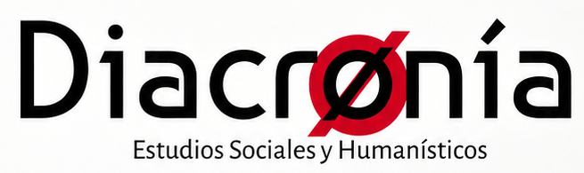
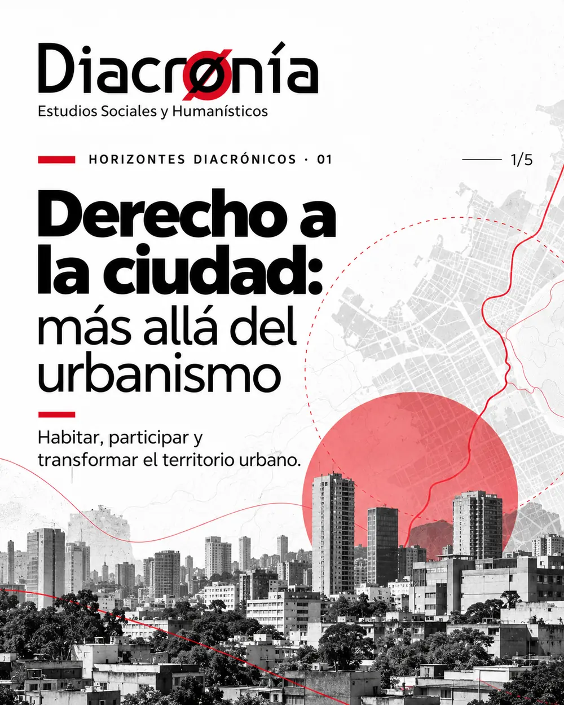

Cuadernos
Diacrónicos
Estudios de mayor desarrollo conceptual, histórico y metodológico; investigación que documenta trayectorias y abre debates.
PUBLICACIONES EN PREPARACIÓN
PLATAFORMA DE PENSAMIENTO CRÍTICO
Diacronía es un espacio para producir, compartir y discutir conocimiento sobre el derecho, la sociedad, las instituciones y sus transformaciones. Una mirada situada, plural y crítica.

Estudiamos los fenómenos sociales y jurídicos desde sus contextos, disputas y trayectorias. Nos interesa comprender cómo se producen las normas, quiénes participan en su construcción y de qué manera inciden en la vida cotidiana.
Articulamos investigación, reflexión pública, herramientas metodológicas y circulación abierta del conocimiento, con atención al territorio, la diferencia y las prácticas sociales.
Reconocimiento MinCiencias · Categoría CClasificación obtenida en la medición de grupos de investigación de MinCiencias, Convocatoria 957 de 2024.
Estudios de mayor desarrollo conceptual, histórico y metodológico; investigación que documenta trayectorias y abre debates.
PUBLICACIONES EN PREPARACIÓNRecursos concretos para formular preguntas, investigar, analizar y trabajar con el derecho desde una perspectiva crítica.
02 PUBLICACIONESLecturas sintéticas que proponen nuevas perspectivas sobre problemas jurídicos, institucionales, sociales y territoriales.
02 PUBLICACIONESExperiencias, memorias y narraciones situadas que permiten comprender cómo se vive y transforma el derecho.
PUBLICACIONES EN PREPARACIÓNDEL INTERROGANTE A LA INVESTIGACIÓN
Nos interesan los problemas que emergen del encuentro entre normas, instituciones, territorios y comunidades: pluralismo jurídico, derechos, justicia, gestión pública, memoria, cultura, participación y transformación social.
Ayúdanos a construir la agenda ↗INVESTIGACIÓN · ASESORÍA · TRANSFERENCIA
Estudios y acompañamiento técnico-jurídico para instituciones, comunidades, gobiernos y organizaciones. Separamos la trayectoria documentada de las capacidades de consultoría disponibles.
Investigación para apoyar la elaboración de proyectos de acuerdo con alcaldías municipales, mediante articulación entre conocimiento jurídico y gestión territorial.
Apoyo académico y jurídico a la formulación de proyectos de acuerdo municipal y fortalecimiento de la producción normativa local.
Derechos fundamentales en la población migrante de Santiago de Cali en el período 2015–2020.
Análisis del involucramiento del poder judicial en fenómenos de corrupción a gran escala y sus implicaciones para la legitimidad institucional.
Acompañamiento técnico en planeación y desarrollo territorial, estructuración y evaluación de políticas públicas, organización administrativa, participación, gestión institucional y mejoramiento de las decisiones públicas.
Servicio de asesoría técnica y jurídica; el alcance se define según los requerimientos de cada entidad u organización.
Solicitar información ↗Formulación y evaluación de actos administrativos, proyectos de acuerdo y herramientas de calidad regulatoria.
Diseño metodológico, análisis normativo, estudios territoriales e investigación jurídica y sociojurídica aplicada.
Definición del modelo de funcionamiento, estructura organizacional, protocolos, gestión documental y revisión del marco normativo aplicable a consultorios jurídicos privados.
BIBLIOTECA / PUBLICACIONES
Ideas para leer, discutir y compartir. Explora cada publicación en su secuencia original de cinco piezas.
BIBLIOTECA / REPOSITORIO DE RESULTADOS
Artículos, libros y resultados de producción normativa elaborados en el marco de las actividades de investigación del Centro.
Revista CS. Acosta Zapata, Duarte-Molina y Mambuscay Burbano.
Consultar artículo ↗Revista Ánfora. Mambuscay Burbano y Duarte-Molina.
Consultar artículo ↗Opinión Jurídica. Pino Canaveral, Garcés Medrano, Duarte-Molina y Mambuscay Burbano.
Consultar artículo ↗Oliveros Ortiz, Duarte-Molina y Mambuscay Burbano. Ediciones Jurídicas Gustavo Ibáñez. ISBN 978-958-791-934-9.
Participación documentada en iniciativas sobre educación, turismo, tributación, vivienda y autonomía económica de las mujeres.
QUIENES INVESTIGAN Y CONSTRUYEN
Un espacio de trabajo interdisciplinario para la investigación, el pensamiento crítico y la construcción de respuestas jurídicas y sociales.
Profesional en Gobierno y Relaciones Internacionales · Investigador · Investigador Junior de MinCiencias (Convocatoria 957 de 2024).
Abogado · Investigador · Investigador Junior de MinCiencias (Convocatoria 957 de 2024).
Economista · Investigadora.
Profesional en Estudios Políticos y Resolución de Conflictos · Investigador.
Abogado · Investigador.
CONOCIMIENTO EN RED
Articulaciones académicas y espacios de colaboración señalados por Diacronía.
TU PREGUNTA TAMBIÉN IMPORTA
Queremos escuchar problemas, preguntas e inquietudes que merezcan ser estudiadas. Puedes proponer temas jurídicos, sociales, culturales, institucionales o territoriales.
Podrás descargarla como archivo y copiarla para enviarla. La página está preparada para conectar un correo o un formulario institucional cuando se defina ese canal; por ahora, no almacena ni envía respuestas automáticamente.